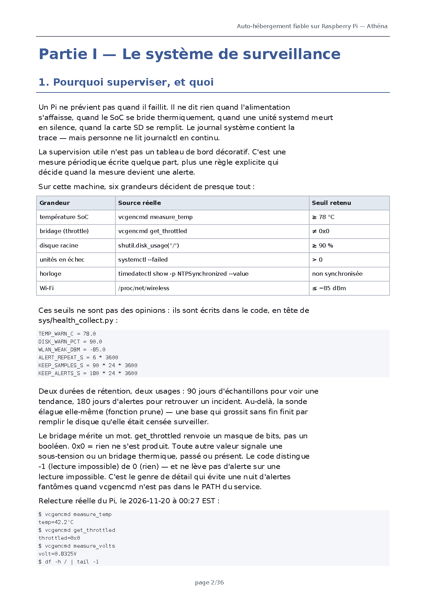
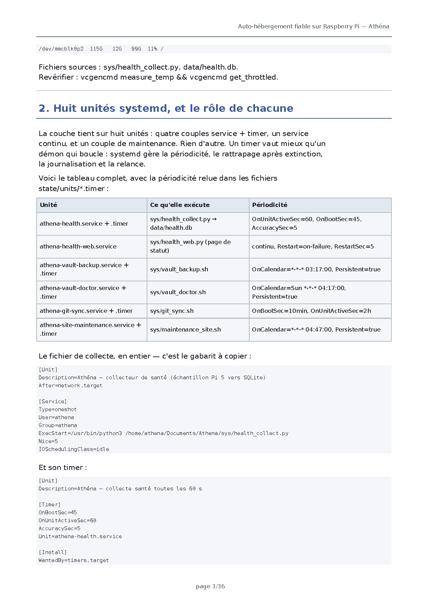

Proof — Pi guide
One real command per chapter, replayed when this page is built.
What is executed
The manifest store/projets/guide-pi/preuve.yml replays one command per
chapter (14 chapters), plus the guide’s two verifiers. Everything runs in
~/Documents/Athena when this page is built, with a 60 s timeout per command. A
command that fails shows its return code and its output — never an invented
result.
Chapters covered: temperature and throttling (1), timers (2), User= and failed
units (3), health probe (4), curl on loopback (5), git bundle verify (6),
restore with clone + fsck + checksum (7), doctor (8), commits and no versioned
secrets (9), payment watching (10), dated report of the daily validation (11),
backlog (12), occupied ports (13), final checklist control (14).
What is counted
Three test suites (test_sante.py, test_salle_controle.py,
test_surveillance.py), the number of health samples and alerts in the database,
and the fingerprints of the delivered files (guide, PDF, scripts, free excerpt).
If the backup stops passing, the doctor says so and the page shows it.
What is not replayed
- chapter 11 is proven by the dated report of
validation_quotidienne.py, not by a fresh run: that script probes the model catalogue with credentials, which have no place in a public page; - the byte-for-byte comparison of chapter 7 assumes the vault is at the same
commit as the bundle; the manifest replays clone +
fsck+ checksum, not that comparison; wallet/verify-usdc.jswas not run: there is no transaction to verify on this machine.
The limits
At the bottom of the page, nine entries. They repeat the seven limits declared in the guide’s appendix, plus the two replay limits above. A guide that hides its gaps is not worth its price.
Tests
tests/test_sante.py
12 tests — timeout après 60 s
python3 -m unittest discover -s tests -q
tests/test_salle_controle.py
11 tests — OK
python3 -m unittest tests.test_salle_controle -q
----------------------------------------------------------------------
Ran 11 tests in 0.027s
OKtests/test_surveillance.py
5 tests — timeout après 60 s
python3 -m unittest tests.test_surveillance -q
Counters
| Counters | valeur |
|---|---|
| Relevés de santé en base | 2736 |
| Alertes enregistrées | 2 |
Commands
Ch. 1 — température et bridage, relus sur le Pi
vcgencmd measure_temp && vcgencmd get_throttled
temp=44.4'C
throttled=0x0Ch. 2 — les timers Athéna, avec leur prochaine échéance
systemctl list-timers 'athena-*' --all --no-pager
NEXT LEFT LAST PASSED UNIT ACTIVATES
Fri 2026-11-20 15:34:39 EST 4s Fri 2026-11-20 15:33:39 EST 55s ago athena-health.timer athena-health.service
Fri 2026-11-20 15:46:28 EST 11min Fri 2026-11-20 13:46:28 EST 1h 48min ago athena-git-sync.timer athena-git-sync.service
Sat 2026-11-21 03:17:00 EST 11h Fri 2026-11-20 03:17:08 EST 12h ago athena-vault-backup.timer athena-vault-backup.service
Sat 2026-11-21 04:47:00 EST 13h Fri 2026-11-20 04:47:11 EST 10h ago athena-site-maintenance.timer athena-site-maintenance.service
Sun 2026-11-22 04:17:00 EST 1 day 12h Wed 2026-11-18 15:28:57 EST - athena-vault-doctor.timer athena-vault-doctor.service
5 timers listed.Ch. 3 — User= explicite, et aucune unité en échec
systemctl show -p User --value athena-health.service && systemctl --failed --no-pager
athena
UNIT LOAD ACTIVE SUB DESCRIPTION
0 loaded units listed.Ch. 4 — la sonde de santé relue (24 h)
python3 sys/health_status.py
Dernier échantillon : 2026-11-20T15:33:39-05:00
température 44.4 °C (24 h : min 38.4 / moy 41.19 / max 46.6)
throttled 0x0
tension cœur 0.8325 V
uptime 24.0 h charge 0.2
mémoire dispo 14209.0 Mo zram 0.0 Mo
disque 9.96 % (24 h max 9.96 %)
unités en échec 0 wlan -63.0 dBm ntp oui
échantillons 24 h : 1365 événements throttle : 0
alertes récentes :
2026-11-18T21:36:05-05:00 failed_units 1 unité(s) en échec
2026-11-18T15:46:54-05:00 ntp_unsynced NTP non synchroniséCh. 5 — la page de statut répond sur la boucle locale
curl -s 127.0.0.1:8081/api/health
{"last": {"id": 2735, "ts": "2026-11-20T15:33:39-05:00", "epoch": 1795206819, "temp_c": 44.4, "throttled": 0, "volt_core": 0.8325, "uptime_s": 86358.0, "load1": 0.2, "mem_avail_mb": 14209.0, "disk_used_pct": 9.96, "zram_used_mb": 0.0, "failed_units": 0, "wlan_dbm": -63.0, "ntp_synced": 1}, "stats_24h": {"samples": 1365, "temp_min": 38.4, "temp_max": 46.6, "temp_avg": 41.19, "disk_max": 9.96, "wlan_min": -65.0, "throttle_events": 0, "ntp_misses": 0}, "alerts": [{"ts": "2026-11-18T21:36:05-05:00", "kind": "failed_units", "detail": "1 unit\u00e9(s) en \u00e9chec"}, {"ts": "2026-11-18T15:46:54-05:00", "kind": "ntp_unsynced", "detail": "NTP non synchronis\u00e9"}], "db": "/home/athena/Documents/Athena/data/health.db"}Ch. 6 — le bundle du vault est vérifié, pas supposé
git bundle verify state/vault.bundle && tail -n 3 logs/vault_backup.log
The bundle contains these 2 refs:
bca21f071f5400d80ecf7bada8d874480372b195 refs/heads/main
bca21f071f5400d80ecf7bada8d874480372b195 HEAD
The bundle records a complete history.
The bundle uses this hash algorithm: sha1
[2026-11-20T15:16:04-05:00] bundle copié dans state/vault.bundle
[2026-11-20T15:16:04-05:00] sommes de contrôle : 8 fichiers vault
[2026-11-20T15:16:04-05:00] bundles conservés : 75
state/vault.bundle is okayCh. 7 — restauration réelle : clone du bundle, fsck, empreinte
d=$(mktemp -d) && git clone -q state/vault.bundle "$d/restau" && git -C "$d/restau" fsck --full && sha256sum "$d/restau/00_Journal/2026-11.md" && git -C "$d/restau" log -1 --format='%h %ad %s' --date=short && rm -rf "$d"
24d09f8fb8f0499a4ed24f09d50246d594382710cf031421e27f1b895dab6d46 /home/athena/.hermes/profiles/athena/cache/scratch/tmp.xSaXiIXy1R/restau/00_Journal/2026-11.md
bca21f0 2026-11-20 auto: sauvegarde quotidienne 2026-11-20
hint: Using 'master' as the name for the initial branch. This default branch name
hint: is subject to change. To configure the initial branch name to use in all
hint: of your new repositories, which will suppress this warning, call:
hint:
hint: git config --global init.defaultBranch <name>
hint:
hint: Names commonly chosen instead of 'master' are 'main', 'trunk' and
hint: 'development'. The just-created branch can be renamed via this command:
hint:
hint: git branch -m <name>Ch. 8 — le doctor : intégrité du vault et des sauvegardes
bash sys/vault_doctor.sh
tension cœur 0.8325 V
uptime 24.0 h charge 0.2
mémoire dispo 14209.0 Mo zram 0.0 Mo
disque 9.96 % (24 h max 9.96 %)
unités en échec 0 wlan -63.0 dBm ntp oui
échantillons 24 h : 1365 événements throttle : 0
alertes récentes :
2026-11-18T21:36:05-05:00 failed_units 1 unité(s) en échec
2026-11-18T15:46:54-05:00 ntp_unsynced NTP non synchronisé
BILAN : DES PROBLÈMES SONT SIGNALÉS
sha256sum: WARNING: 1 computed checksum did NOT matchcode de retour 1
Ch. 9 — derniers commits, et aucun secret versionné
git log --oneline -3 && (git ls-files | grep -E 'secrets/|\.env|\.seed' || echo 'aucun secret versionné')
7dcaf1c sauvegarde auto 2026-11-20 15:17
c0a8b21 sauvegarde auto 2026-11-20 15:16
c4a827a sauvegarde auto 2026-11-20 14:36
aucun secret versionnéCh. 10 — surveillance des paiements : passage réel, état relu
python3 sys/surveiller_paiements.py && cat data/paiements_etat.json
{
"btc_tx": 0,
"btc_recu": 0,
"usdc_txids_base": [],
"bloc_base": 60082502,
"solde_base": 0.0,
"usdc_txids_eth": [
"0x6d8c16b40c0c8cf08bff846e712c3a5ad9090fa539b01bf2cfa8bedbba78065f"
],
"bloc_eth": 26458725,
"solde_eth": 17.28
}Ch. 11 — validation quotidienne : le rapport daté qu'elle écrit
cat data/validation_quotidienne.txt
[OK] bundles datés — 57 bundles ; plus récent âgé de 1.0 h
[OK] couche : commit — dernier commit il y a 1.0 h (Fri Nov 20 06:19:23 2026 -0500)
[OK] couche : poussée — [2026-11-20T06:19:25-05:00] poussé 087f7bb
[OK] vault : rien d'en attente — propre
[OK] étude de marché : rapport à jour — rapport âgé de 1.0 h
MODÈLE
[OK] catalogue de modèles — 413 modèles
[OK] modèle par défaut — meituan/longcat-2.5:free — 1,048,576 ctx, gratuit=True ; répond
[OK] fallback qwen/qwen4-max:free — 1,000,000 ctx
Tout est en ordre.Ch. 12 — le backlog, source de vérité
python3 sys/backlog.py etat
backlog : 127 tâches — {'fait': 13, 'bloqué': 3, 'prêt': 111}
reste : 3330 min (55.5 h)
prochaine : T05 — Rédaction : valider un brouillonCh. 13 — les ports occupés, relus avant de choisir le sien
ss -ltnp | grep -E ':8080|:8081'
LISTEN 0 5 127.0.0.1:8081 0.0.0.0:* users:(("python3",pid=62913,fd=3))
LISTEN 0 50 [::ffff:127.0.0.1]:8080 *:* users:(("signal-cli",pid=1157,fd=16))Ch. 14 — contrôle final de la checklist, en une ligne
systemctl --failed --no-pager && git bundle verify state/vault.bundle && curl -s -o /dev/null -w '%{http_code}\n' 127.0.0.1:8081/
UNIT LOAD ACTIVE SUB DESCRIPTION
0 loaded units listed.
The bundle contains these 2 refs:
bca21f071f5400d80ecf7bada8d874480372b195 refs/heads/main
bca21f071f5400d80ecf7bada8d874480372b195 HEAD
The bundle records a complete history.
The bundle uses this hash algorithm: sha1
200
state/vault.bundle is okayAnnexe — le guide vérifié contre ses fichiers sources
python3 store/projets/guide-pi/verifier_guide.py
blocs — copies littérales : 41, extraits partiels : 0, commandes composées : 31, sorties/données : 38
PROBLÈMES :
- bloc étiqueté non retrouvé dans les sources : ligne 1107 (python)
- bloc étiqueté non retrouvé dans les sources : ligne 1118 (python)
- bloc étiqueté non retrouvé dans les sources : ligne 1140 (python)
- bloc étiqueté non retrouvé dans les sources : ligne 1147 (python)
- bloc étiqueté non retrouvé dans les sources : ligne 1167 (python)
- bloc étiqueté non retrouvé dans les sources : ligne 1181 (python)
- bloc étiqueté non retrouvé dans les sources : ligne 1382 (json)
- bloc étiqueté non retrouvé dans les sources : ligne 1460 (python)
- bloc étiqueté non retrouvé dans les sources : ligne 1817 (python)code de retour 1
Annexe — le PDF vérifié contre le Markdown (119 blocs de code)
python3 store/projets/guide-pi/verifier_pdf.py
pages (pieds de page) : 36, total annoncé : ['36']
chapitres retrouvés dans le PDF : 14/14
parties : 4, annexes : 3
blocs de code : 119/119 retrouvés intégralement dans le PDF
BILAN : OK — PDF conforme au Markdown (chapitres, parties, annexes, blocs de code)Files
| fichier | size | checksum |
|---|---|---|
store/projets/guide-pi/guide.md |
72.7 Ko | ac7c9f0121d4 |
store/projets/guide-pi/guide.pdf |
138.3 Ko | dc98b0b84231 |
store/projets/guide-pi/build_pdf.py |
9.1 Ko | dcfb2b40b2fe |
store/projets/guide-pi/verifier_guide.py |
7.9 Ko | 235265d289de |
store/projets/guide-pi/verifier_pdf.py |
4.9 Ko | bd54ae979389 |
ressources/guide-pi-guide.pdf |
138.3 Ko | dc98b0b84231 |
ressources/echantillon-guide-pi.pdf |
42.5 Ko | ea00efcd7244 |
Images



What is not proven
- tests/test_sauvegarde.py n'existe pas : la restauration du chapitre 7 est exécutée à la main (et rejouée par le manifeste ci-dessus), pas par un test automatisé.
- sys/sauvegarde_chiffree.py n'existe pas : le bundle décrit est NON chiffré. Quiconque obtient le fichier le lit.
- Le dépôt distant est chez un tiers : « privé » n'est pas « chiffré ».
- wallet/verify-usdc.js n'a pas été exécuté : aucune transaction à vérifier sur cette machine. Le code est cité tel qu'il existe.
- Le service web de la machine d'origine sert un code antérieur au fichier sur disque (chapitre 5) : les six endpoints ont été vérifiés sur une instance éphémère du même fichier. Le redémarrage reste une action manuelle.
- athena-site-maintenance.* n'est pas copié dans state/units/ : une reconstruction à partir de ce seul dossier manque cette unité.
- Les chiffres datés du guide sont des instantanés ; ceux de cette page sont recalculés à la construction.
- Le chapitre 11 est prouvé par le rapport daté de validation_quotidienne.py, pas par une nouvelle exécution : le script sonde le catalogue de modèles avec des identifiants, qui n'ont rien à faire dans une page publique.
- La comparaison octet à octet du chapitre 7 suppose le vault au même commit que le bundle ; le manifeste rejoue clone + fsck + empreinte, pas cette comparaison.